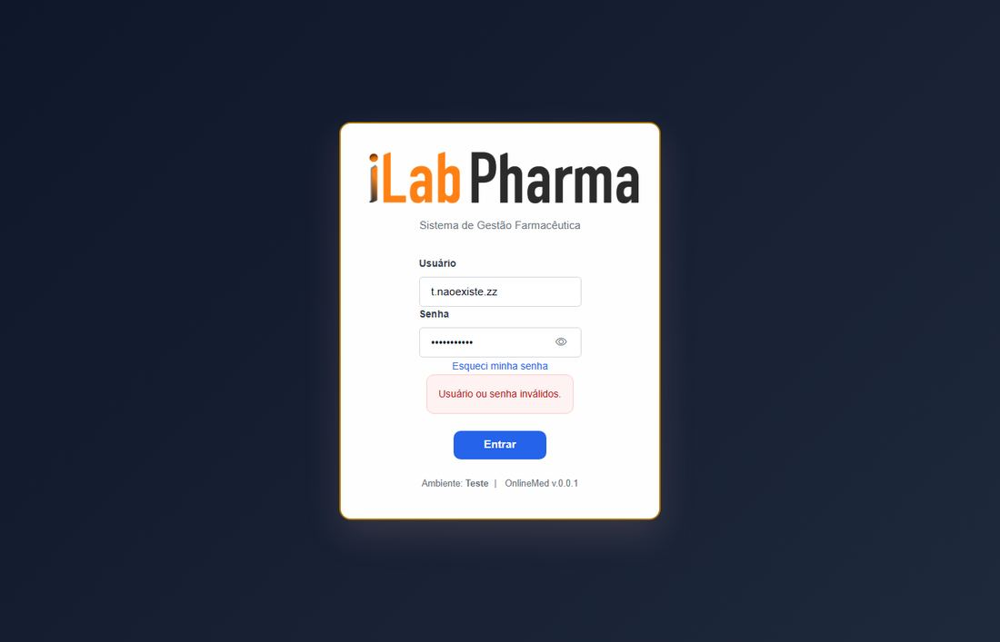
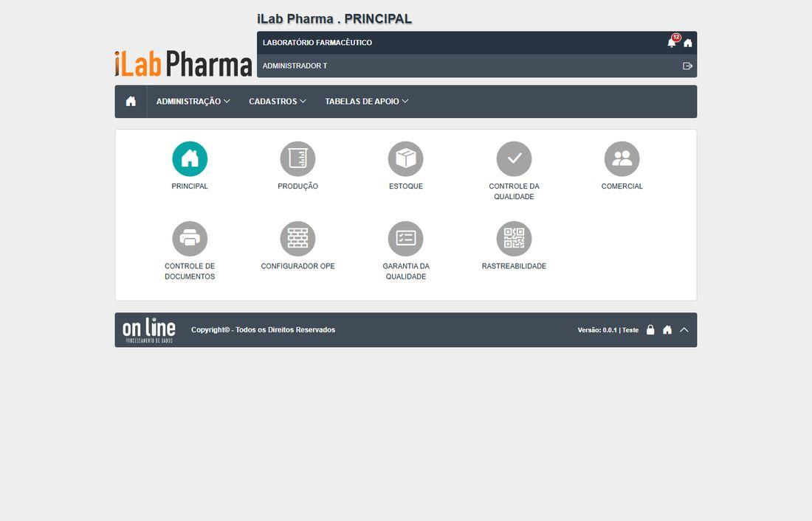
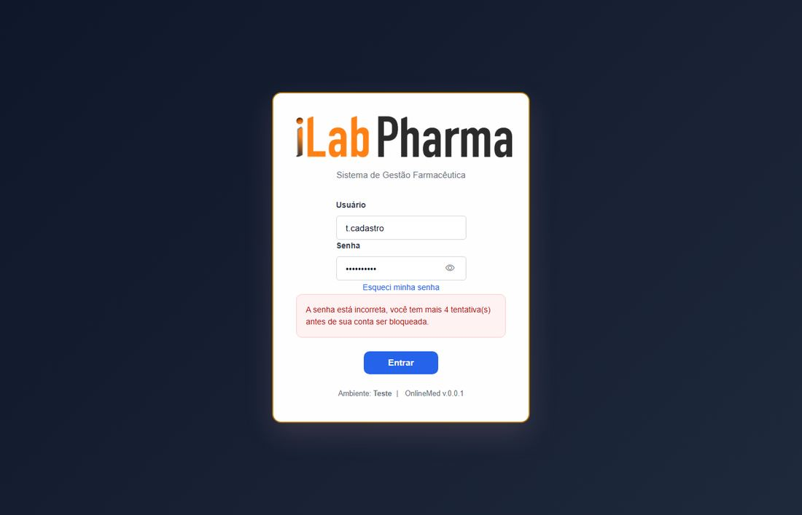

Roteiro para quem vai testar a tela Login (menu Acesso ao sistema) na versão nova. Use o ambiente de teste da versão nova; o sistema entregue só entra se um resultado parecer estranho.
Antes de começar
- Usuários
t.*criados (ver a página "Usuários de teste"). - O relógio da máquina de teste vale como referência de hora.
- Todo registro novo começa com
T.(se o ponto falhar, useT-e anote o campo). - Dados de teste ficam no ambiente: não apague o que não criou.
Passos
| # | O que fazer | O que deve aparecer | Caso do plano |
|---|---|---|---|
| 1 | Abrir https://10.1.30.179/login e clicar em Entrar sem preencher nada. |
O botão fica desabilitado e nada é enviado. | RG-PRI-002 |
| 2 | Entrar com t.cadastro e a senha certa. |
Vai à tela inicial. Anote o menu que aparece. | RG-PRI-001 |
| 3 | Sair. Tentar um usuário que não existe e depois t.cadastro com senha errada. Copiar as duas mensagens. |
As mensagens são diferentes? Se sim, anote DV-PRI-015. | RG-PRI-003 |
| 4 | Entrar com t.inativo e com t.containativa. |
"Usuário inativo." e "Conta de usuário inativa." Anote se a mensagem permanece na tela. | RG-PRI-004 |
| 5 | Entrar com t.vencido e com t.futuro. |
Mensagens de período de validade. | RG-PRI-005 |
| 6 | Com t.bloqueio, errar a senha repetidas vezes, anotando o que o contador diz a cada tentativa. |
Bloqueia na 5ª; as seguintes também, mesmo com a senha certa. | RG-PRI-006 |
| 7 | Com t.cadastro, errar 2 vezes, acertar e errar de novo. |
O contador volta a "mais 4". | RG-PRI-007 |
| 8 | Sem estar logado, digitar /administracao/perfis no endereço. |
Volta ao login. | RG-PRI-008 |
| 9 | Logado, ficar sem usar a tela por mais de 10 minutos. | A tela volta sozinha ao login. | RG-PRI-009 |
Capturas de tela da versão nova
Imagens da rodada de testes de 17/10/2026, na ordem dos passos. Clique para ampliar.
Passo 1

Passo 3

Passo 6


Passo 7


Passo 8

Passo 9


Como registrar
Para cada passo anote: o que apareceu na tela (copie a mensagem), a classe (Igual, Regressão, Melhoria, Novo ou Bloqueado), o defeito (se houver) e o nome da captura. Se um caso ficou Bloqueado, diga o motivo (usuário, perfil ou dado que faltou).
Se algo parecer uma falha de permissão, confira primeiro a Conta usuário e o Perfil do usuário antes de concluir que a tela falhou.
Tabela de resultados
A coluna Resultado do caso em 17/10/2026 traz o que a tela mostrou, para o caso do plano que o passo cobre (passos do mesmo caso repetem o resultado). Refaça o passo e use a última coluna para o seu resultado: se for diferente, anote a classe (Igual, Regressão, Melhoria, Novo ou Bloqueado) e o defeito.
| Passo | Resultado do caso em 17/10/2026 | Classe | Defeito | Captura | Seu resultado |
|---|---|---|---|---|---|
| 1 | O botão Entrar fica desabilitado; nenhuma chamada à API | Igual | — | RG-PRI-002-passo-1-vazio |
|
| 2 | Entra e vai à tela inicial | Igual | — | — | |
| 3 | As mensagens são diferentes ("Usuário ou senha inválidos." × "A senha está incorreta, você tem mais 4 tentativa(s)…"): revelam se o usuário existe | Igual | DV-PRI-015 | RG-PRI-003-passo-1-usuario-inexistente |
|
| 4 | "Usuário inativo." e "Conta de usuário inativa." (a mensagem some em cerca de 1 s) | Igual | N-003 | — | |
| 5 | "Usuário fora do período de validade." e "Usuário ainda não está dentro do período de validade." | Igual | — | — | |
| 6 | Tentativas 1 a 4 dizem "mais 4, 3, 2 e 1"; a 5ª bloqueia e a contagem fecha. O legado bloqueava no 4º erro | Melhoria | — | RG-PRI-006-senha-certa-apos-bloqueio, RG-PRI-006-tentativa-3 |
|
| 7 | O contador zera (2 erros, acerto, novo erro: volta a "mais 4") | Igual | — | RG-PRI-007-passo-1-acertou-depois, RG-PRI-007-passo-2-contador-apos-acerto |
|
| 8 | Volta a /login |
Igual | — | RG-PRI-008-passo-1-sem-login |
|
| 9 | Após 11,5 minutos a tela voltou sozinha ao login | Igual | — | RG-PRI-009-passo-1-apos-ocioso, RG-PRI-009-passo-2-apos-pesquisar |